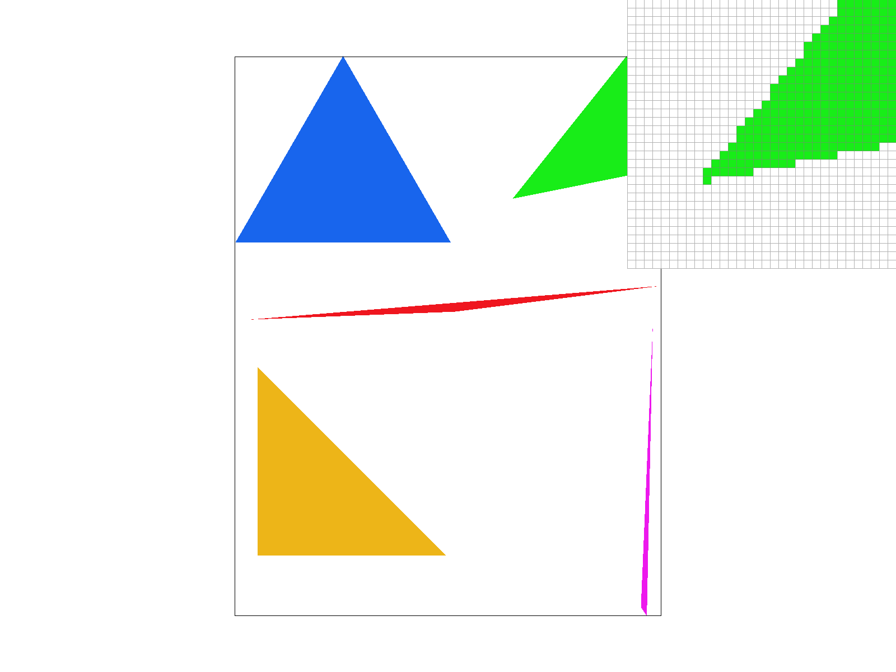
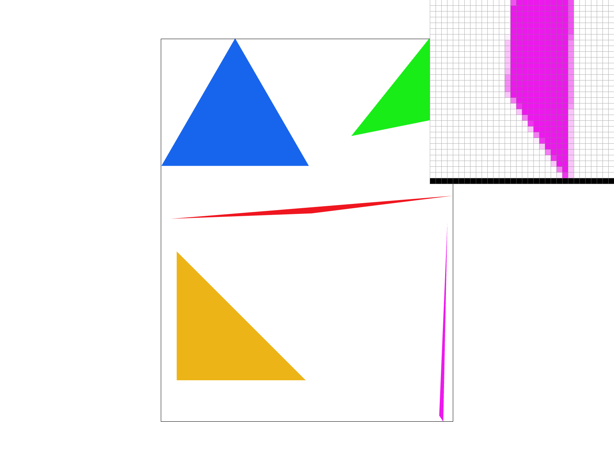
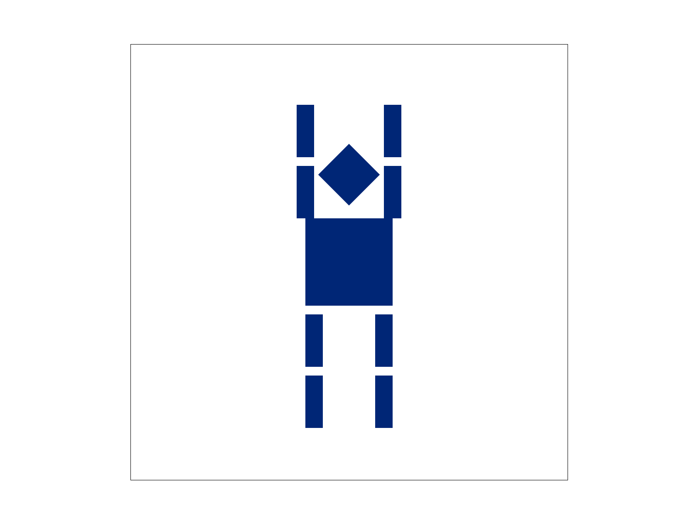
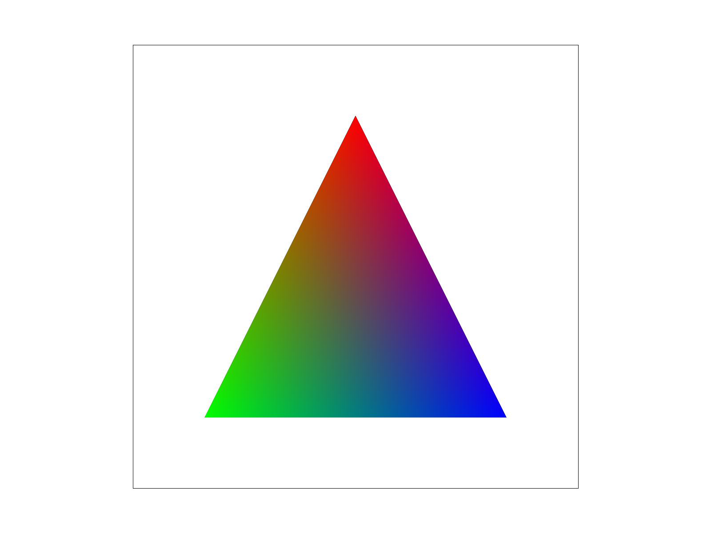
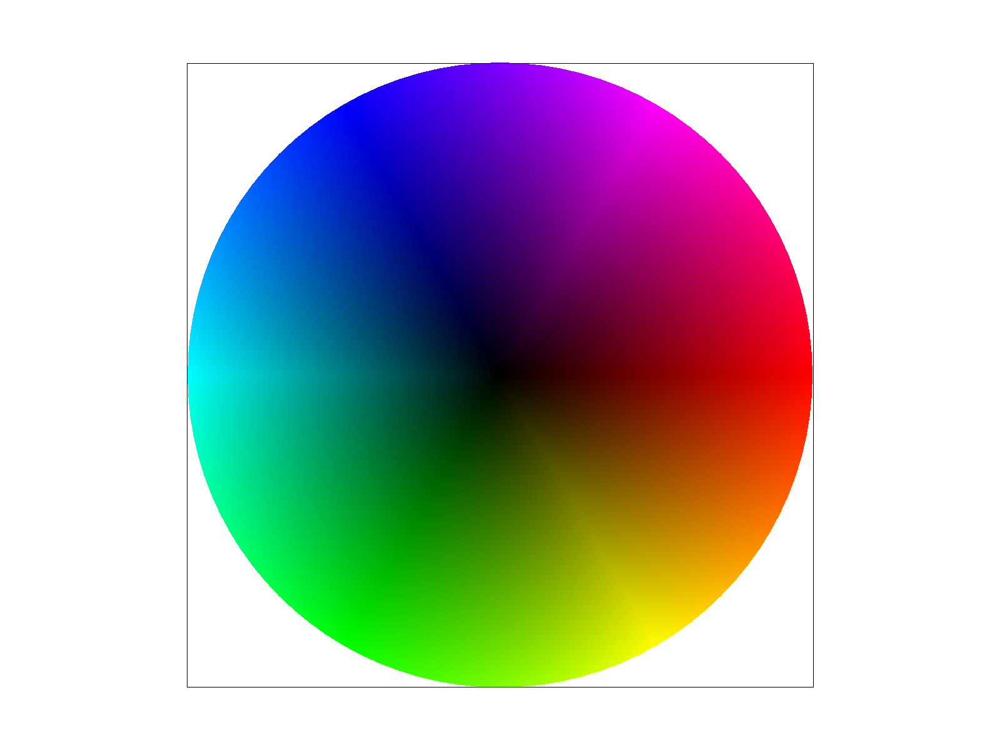
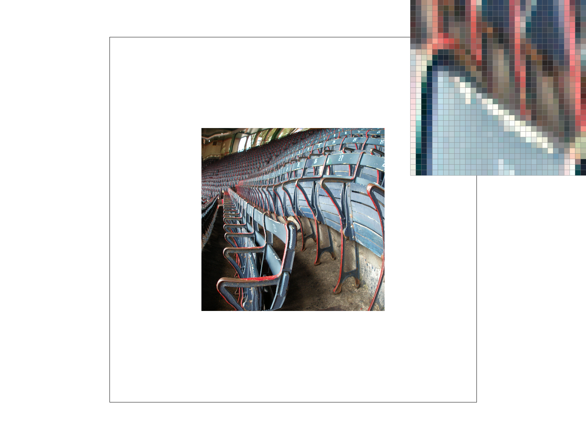
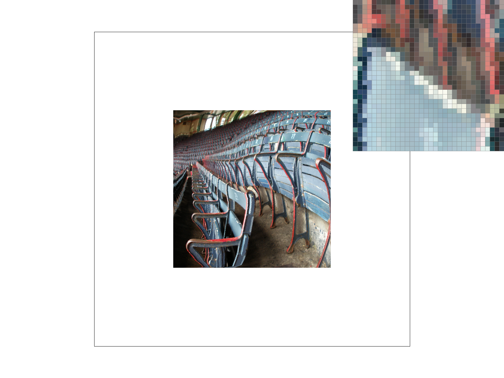
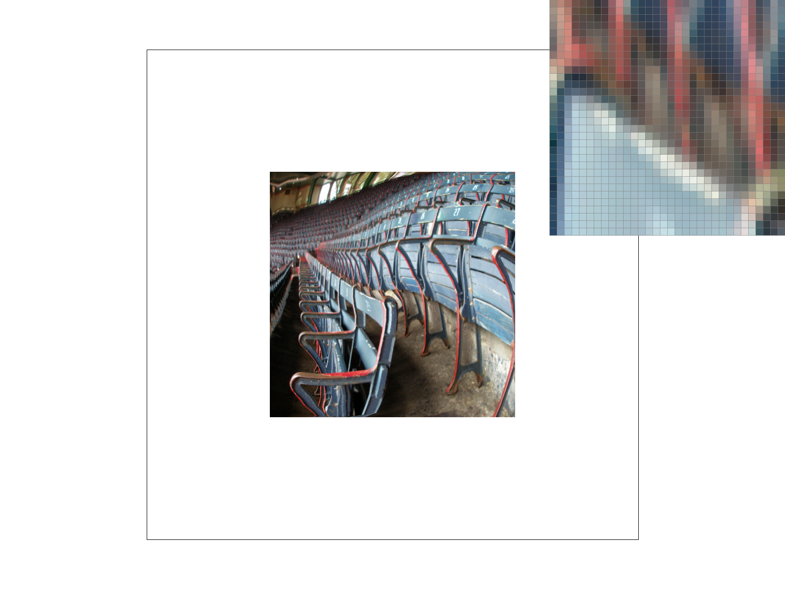

I compute the triangle's bounding box by computing the minimum, and maximum, x and y coordinates of its three vertices. Along with rounding the minimum coordinates down and the maximum coordinates up, in order to get integer loop bounds, I also restrict these bounds to the framebuffer so that I only access valid pixels.
I then loop through the candidate pixels and sample each pixel at its center, calculated as (x + 0.5, y + 0.5). Then, to determine whether the sample is inside the triangle, I evaluate the line equations for the three directed edges. If the results are all nonnegative or all nonpositive, I call fill_pixel() to give that pixel the triangle's color.
My algorithm only checks candidate pixels if they are within the triangle's bounding box, clipped to the framebuffer. Each pixel requires three edge tests and a constant amount of additional work, so therefore, the running time is O(N), where N is the number of candidate pixels within the inside of the bounding box. It's no worse than the bounding-box approach because it does not scan pixels outside of those bounds. Essentially, clipping the bounding box to the framebuffer can only reduce the number of samples checked, so my algorithm checks at most as many samples as scanning the entire triangle’s bounding box.

The algorithm first divide each pixel into a square grid of samples, with sqrt(sample_rate) samples along each side. I then store the sample colors in sample_buffer, which is a one-dimensional vector representing a larger image; this image has a width of width * sqrt(sample_rate) and a height of height * sqrt(sample_rate). Thus the buffer contains width * height * sample_rate colors.
The algorithm scales the triangle's vertex coordinates by sqrt(sample_rate) so that it's possible to reuse my triangle rasterization algorithm from part 1 on this larger image. It then proceeds with computing the bounding box, then restricts it to the sample buffer, and check each sample at its center using the same three edge tests from Task 1. If the sample is inside the triangle, the triangle's color is written directly into sample_buffer. I access each sample using its row times the sample buffer's width plus its column.
I updated the buffer resizing functions so that there is enough space for all the samples when the sample rate or framebuffer size changes, as well as fill_pixel(), in order to give every sample within a pixel the same color for points and lines. This is so that features such as the black rectangle border remain visible at higher sample rates.
After all the elements have been rasterized, resolve_to_framebuffer() adds the sample colors belonging to each pixel and divides the sum by sample_rate. This average color is finally written into the final RGB framebuffer, reducing the larger sample image back to the original output resolution.
With only one sample per pixel, a triangle will either cover the pixel's center or will miss it, leading to jagged edges being produced, and also can cause thin parts of a triangle to disappear. Supersampling checks several positions within each pixel, so that the average color better represents how much of the pixel the triangle covers. Also, along an edge, some samples receive the triangle's color while others keep the background color. Averaging these samples will create a smoother transition between the triangle and its background.

The screenshots highlight the pink triangle's bottom tip. At 1 sample per pixel, the edge has an abrupt staircase pattern because each pixel receives either the triangle's color or the background color. At 4 samples per pixel, partially covered pixels have intermediate colors, making the edge appear smoother. At 16 samples per pixel, there are more possible coverage levels, so the transition becomes more gradual and the thin tip is represented more accurately.
I wanted cubeman to look like he was raising both arms and cheering for Berkeley, so I changed his color to Berkeley blue and also rotated the arm on the left side of the image by 90 degrees and the arm on the right by -90 degrees. I used translations to position each arm relative to its shoulder before rotating it, then placed it beside the torso. Since each arm’s segments are inside the same transform group, they move together and point upward.

Barycentric coordinates describe a point within a triangle by using only three weights, with one for each vertex. The weights must sum to 1 and are all nonnegative, and they are used to calculate how much each vertex's color contributes to the color at each specific point. The formula is described below.

Each point's color is a mixture of the red, green, and blue vertex colors. Specifically, the color at a point is given by the formula: (alpha * red) + (beta * green) + (gamma * blue). Alpha, beta, and gamma are the weights for the red, green, and blue vertices, respectively, and their values depend on the point’s position within the triangle. For example, at the red vertex, alpha is 1 and the other weights are 0, so the color is entirely red. A visual way to understand the calculation: look halfway along the edge between the green and blue vertices, their weights are each 1/2 and the red weight is 0, so naturally this is producing cyan. Another example is that at the triangle's center of mass, all three weights are 1/3, producing gray. The weights change continuously across the triangle, creating the smooth color gradients.
One problem I encountered was a thin white line between neighboring triangles in the color wheel. This was because floating-point rounding in the edge tests could cause samples near a shared edge to be missed, leaving the white background visible. Changing the sample positions and edge-test results from float to double improved the precision and removed the visible line in my rendered example.

Pixel sampling is a method to determine which color to read, from a texture, at a given position. At a high level: for each sample inside a triangle, the algorithm first uses the barycentric coordinates to interpolate the UV coordinates from the triangle's three vertices. Then, it maps these UV coordinates to positions in the texture image and also samples a color using either nearest or bilinear sampling (discussed later). It concludes by writing that color into the sample buffer, which is averaged into the final framebuffer.
Nearest sampling selects the texel closest to the texture position and uses its color directly. Bilinear sampling, however, uses the four surrounding texels. Speficially, the bilinear algorithm first blends the two texels in each row based on the horizontal position, and then blends those two results based on the vertical position. This method will produce much smoother transitions between texel colors relative to nearest sampling.
At 1 sample per pixel, nearest sampling clearly produces much sharper, and more blocky transitions, while bilinear sampling blends neighboring texels and makes these transitions smoother. Increasing to 16 samples per pixel also reduces the overall jaggedness by averaging several texture samples within each output pixel. However, this also makes the difference between nearest and bilinear less pronounced in some areas.
The difference between nearest and bilinear is largest and clearest when zooming in on a texture with strongly contrasting neighboring texels, such as the white lettering against the Berkeley blue background ring in the example. Nearest sampling will create sharp blocks of color, while bilinear sampling creates intermediate colors between them due to the blending. In regions where neighboring texels already have similar colors, the two methods look similar because blending those colors changes the resulting color relatively less.
Level sampling is a technique that chooses which resolution of a texture to sample. Level 0 contains the original image, while the higher mipmap levels contain smaller versions that are also filtered. When the texture is small on screen, many texels can fall within one screen pixel, so sampling a suitable smaller version helps reduce aliasing from these fine details.
My implementation begins with calculating UV coordinates at a sample and at positions one screen pixel to its right and below. The differences are then scaled by the original texture's dimensions to measure the texture distance covered by one screen pixel, and takes the base-2 logarithm of the larger distance and restricts the result to the available mipmap levels. L_ZERO uses the original texture, L_NEAREST selects the nearest level, and L_LINEAR blends between the two surrounding levels, and each supports nearest or bilinear pixel sampling.
Pixel sampling: Nearest is faster and less computationally expensive, as it reads one texel per sample, while bilinear blends four texels to produce smoother transitions- meaning it is slower. Both of them use the same texture storage, but neither alone handles aliasing very well when the texture is greatly reduced.
Level sampling: Mipmaps require extra memory, in order to store smaller versions of the texture, but this helps reduce aliasing when the texture appears small on screen. This is because instead of sampling fine details that a screen pixel cannot represent, the algorithm uses a version where those details have already been averaged together. For smoother transitions between levels, it can also blend two levels, although this requires more computation than selecting one.
Samples per pixel: More samples for this technique reduce both triangle-edge jaggedness and texture aliasing, but requires more computation and a larger sample buffer. Its cost grows linearly with the sample count, as N samples per pixel means roughly N times the rasterization and texture work, and a sample buffer N times larger than at one sample per pixel. Fewer samples are faster and will use less memory, but as a tradeoff will produce more jaggedness in the resulting image.
Overall, at a high level, pixel and level sampling are cheap ways to improve texture aliasing specifically, while supersampling greatly reduces triangle-edge and texture aliasing. Thus, increasing the sample count generally improves image quality, but requires more computation and a larger sample buffer.
I'm from Boston and I'm a huge Red Sox fan, so I chose a photograph of Fenway Park's grandstand seats. It works well because the repeated rows and narrow gaps contain many fine details that can show aliasing when the image is reduced. All four images use 1 sample per pixel with roughly the same view.


